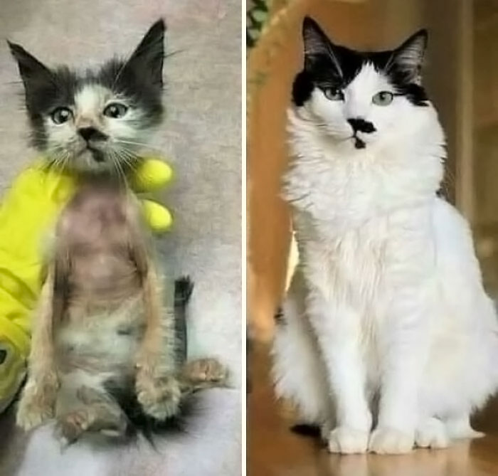
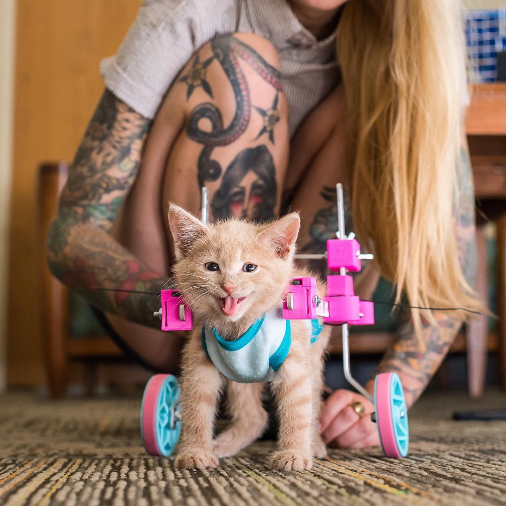
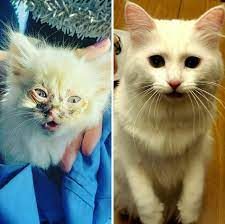
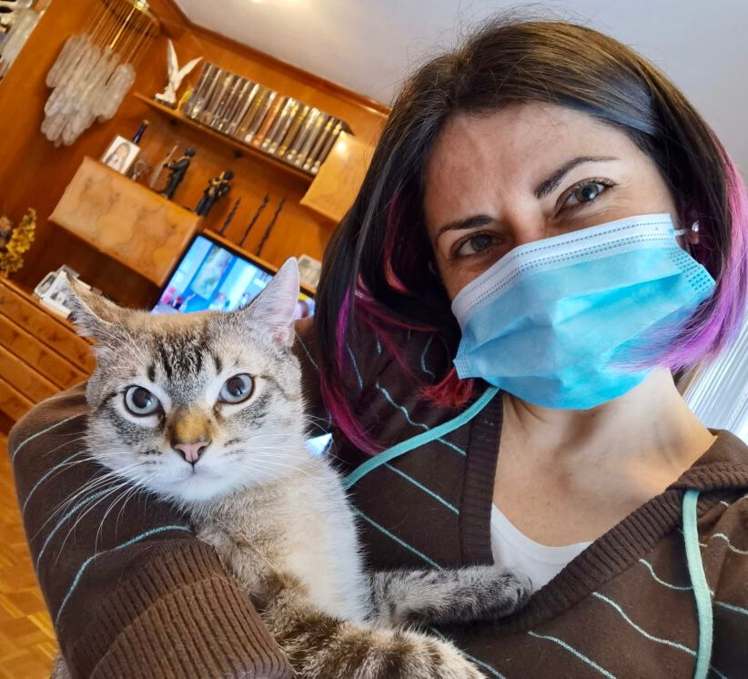
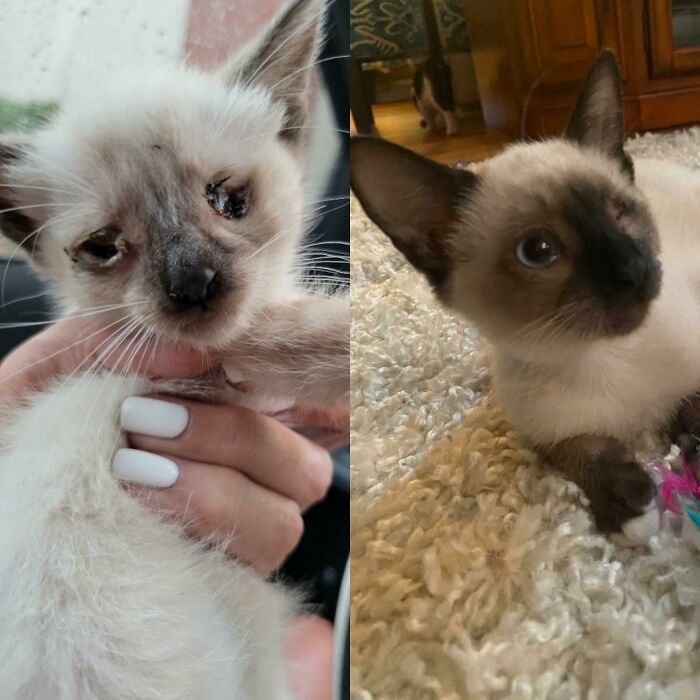

Sobre Nosotros:
"Adopta un Amigo Peludo" es una plataforma dedicada a la adopción de gatitos en busca de un hogar amoroso. Nuestra misión es unir a los gatitos abandonados con familias cariñosas para brindarles un futuro lleno de amor y cuidado.




¿Por Qué Elegirnos?
- Amor por los Gatitos: En nuestro equipo, amamos a los gatitos tanto como tú. Trabajamos incansablemente para asegurarnos de que cada gatito encuentre un hogar lleno de amor.
- Gatitos Sanos y Felices: Todos los gatitos que ofrecemos en adopción están sanos, vacunados y esterilizados o esterilizadas. Su bienestar es nuestra prioridad.
- Proceso de Adopción Sencillo: Hacemos que el proceso de adopción sea fácil y rápido. Solo tienes que llenar un formulario y programar una visita para conocer a tu nuevo amigo peludo.
- Apoyo Post-Adopción: No termina con la adopción. Estamos aquí para ofrecer consejos y apoyo en la adaptación de tu gatito a su nuevo hogar.
Gatitos rescatados:
Echa un vistazo a nuestros adorables gatitos en busca de un hogar. Cada uno tiene su propia personalidad y encanto único. ¡Seguro que encontrarás a tu compañero perfecto!

Cómo Adoptar:
- Explora nuestra lista de gatitos disponibles y lee sus perfiles.
- Llena nuestro formulario de solicitud en línea.
- Programa una visita para conocer al gatito en persona.
- ¡Lleva a tu nuevo amigo peludo a casa y comienza una nueva aventura juntos!
Beneficios de la Adopción:
Adoptar un gatito tiene muchos beneficios, tanto para ti como para el gatito. Algunos de estos beneficios incluyen:
- Muestra tu amor por los animales.
- Compañía y amor incondicional.
- Mejora tu estado de ánimo y reduce el estrés.
- Salva una vida y combate el abandono animal.
Contacto:
- Sitio web: www.adoptagatitos.com
- Teléfono: +1-123-456-7890
- Correo electrónico: info@adoptagatitos.com
- Dirección: Calle de los Gatitos Felices, Ciudad Gatópolis